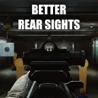

Mod
Better Rear Sights
- Downloads
- 51,930
- Favourites
- 54
- Mod lists
- 108
Introduction
Tarkov’s default iron sights suck. This mod attempts to make them slightly better.
Modified Items
Short version: a bunch.
Long version:
- HK MP7 flip-up rear sight
- KAC Folding rear sight
- KAC Folding micro rear sight
- AK-12 rear sight
- M14 SA Enlarged Military Aperture sight
- AK-545 SAG rear sight
- ASh-12 rear sight carry handle
- HK 416A5 flip-up rear sight
- KRISS Defiance low profile flip-up rear sight
- SA-58 Holland Type rear sight
- HK G36 rear sight
- FN SCAR flip-up rear sight
- RPK-16 rear sight
- AR-15 Colt A2 rear sight
- AR-15 rear sight carry handle
- MP9 rear sight
- AK Taktika Tula TT01 rear sight rail
- AK RD Enhanced V2 Rear Sight
- AK-105 rear sight
- AK-74 rear sight
- AK-74M rear sight
- AKM rear sight
- AKMB system rear sight
- AKMP system rear sight
- Mosin Rifle carbine rear sight
- Mosin Rifle rear sight
- SVT-40 rear sight
- SVDS rear sight
- VPO-101 rear sight
- VPO-209 rear sight
- VSS rear sight
- PK rear sight
- RPD rear sight
- SKS rear sight
- VPO-215-02 .366TKM 600mm barrel
- AKS-74U dust cover
- AKS-74UB dust cover
- AKS-74U Legal Arsenal Pilgrim railed dust cover
If you think there’s a sight that should be included or changed then feel free to leave a suggestion.
Preview
Installation
As per usual for any mod, just drag and drop.
Version
1.7.0
SPT ~4.0.0
Fika: unknown
18,203 downloads51.6 MB
- Updated for SPT 4.0.0
VirusTotal: report 1
Version
1.6.2
SPT ~3.11.0
Fika: unknown
11,872 downloadsUnknown size
- Removed Uzi receiver
Sorry. I’ll bring it back someday but I just don’t want a broken version on the hub for now.
VirusTotal: report 1
Version
1.6.1
SPT ~3.11.0
Fika: unknown
1,062 downloadsUnknown size
- Updated for SPT 3.11
Massive thank you to Groovey and the WTT team for their bundle tool.
VirusTotal: report 1
Version
1.6.0
SPT ~3.10.0
Fika: unknown
10,234 downloadsUnknown size
- Updated to 3.10
- Added AKS-74U dust cover
- Added AKS-74UB dust cover
- Added AKS-74U Legal Arsenal Pilgrim railed dust cover
- Added Uzi receiver (irons were built into the receiver…)
VirusTotal: report 1